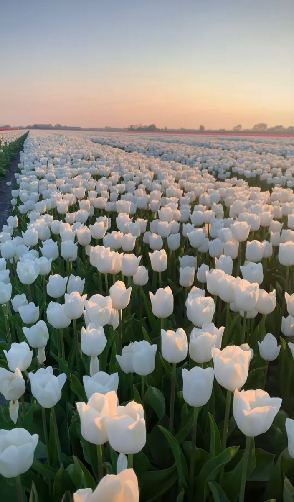

Flowers are the music of the ground from earth's lips spoken without sound.
History of flowers
A flower, also known as a bloom or blossom, is the reproductive structure found in flowering plants (plants of the division Angiospermae).
History shows that flowers have been used by humans for thousands of years, to serve a variety of purposes.
The language of flowers has been recognized for centuries in many countries throughout Europe and Asia.
